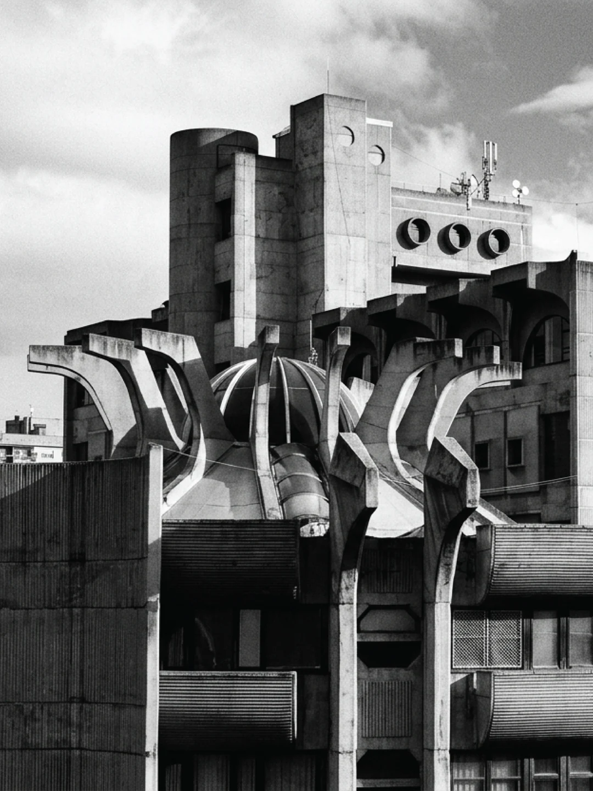
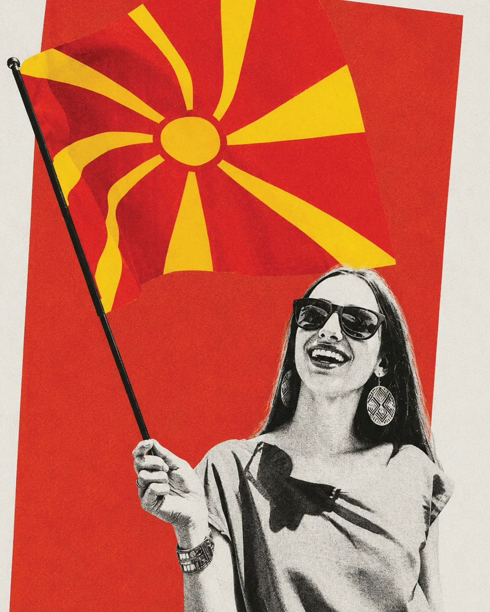
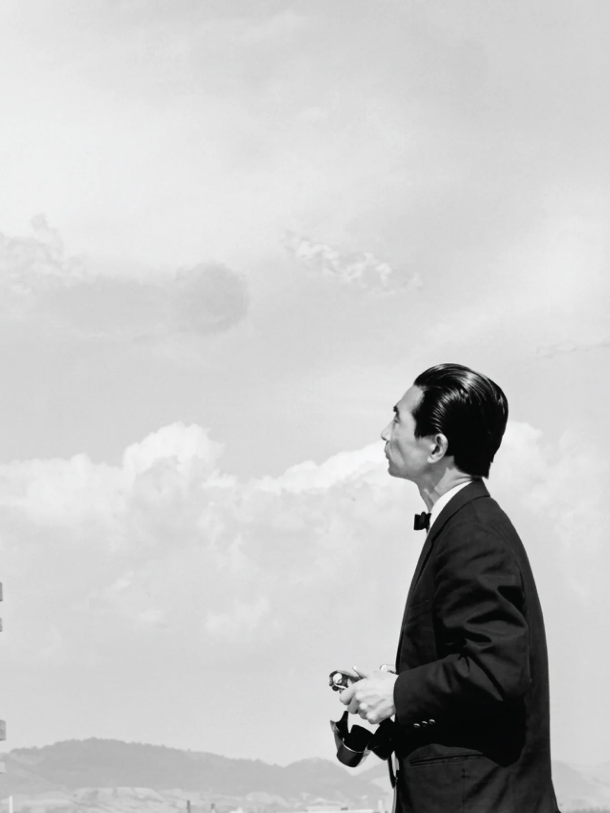
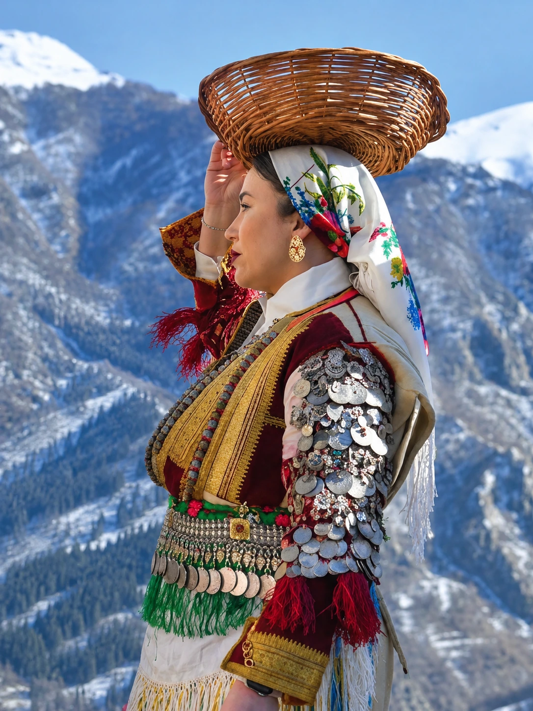
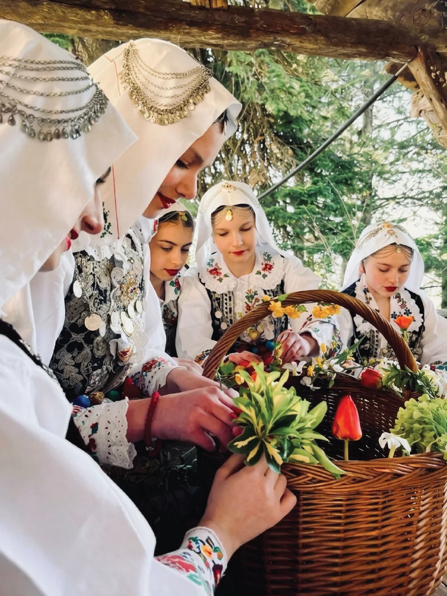
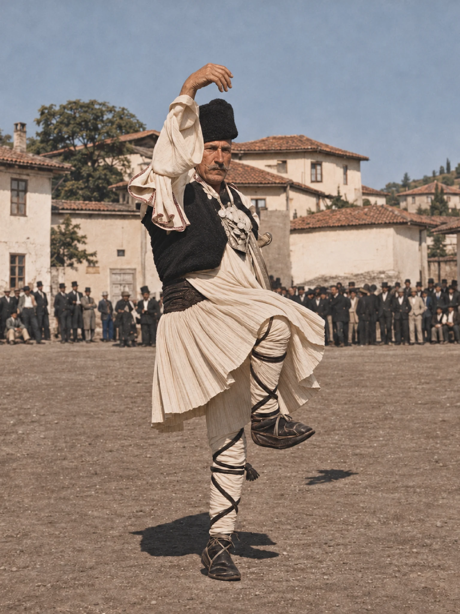
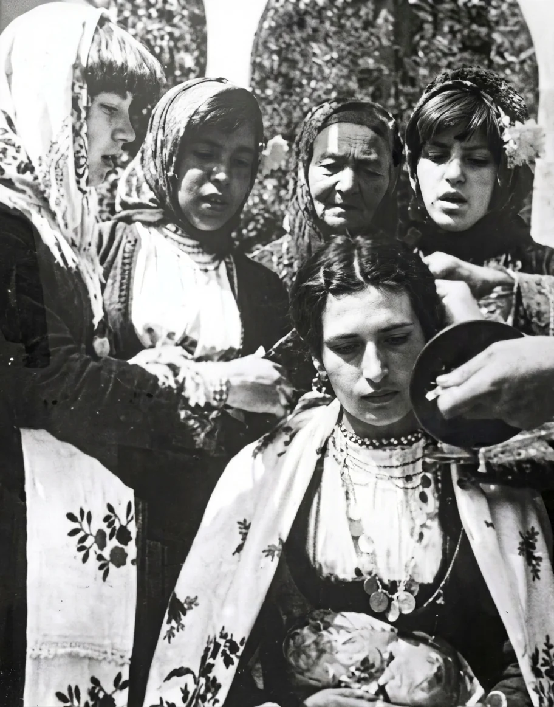

Architecture | Skopje
Concrete Skopje
Modern architecture in post-earthquake Skopje.
Explore the guide
Architecture | Skopje
Modern architecture in post-earthquake Skopje.
Explore the guide
Music | Diaspora
Inside Macedonian community radio in Adelaide, Australia.
Read the story
Quality of Life | Urbanism
Muzej’s editorial ranking of ten places for year-round life.
Explore the ranking

Architecture | Skopje

Music | Galičnik

Sport | Design

Art | Antiquity

Bread, song, and a January homecoming.

Spring blessings carried from house to house.

The sword dancers of Sekirnik.

A song asking for rain.

Architecture | Kruševo

Artist | Painting

Artist | Painting

Art | History

Macedonian culture, in your inbox.